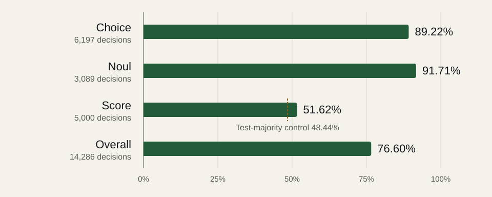
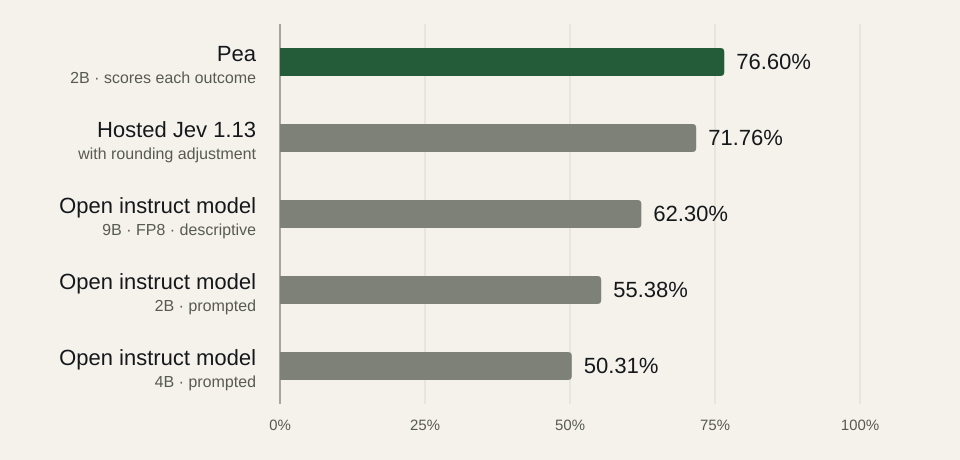

Release
Meet Pea: decisions as probabilities, not text
Pea is our 2B decision model. It returns a probability for every outcome you define. Hosted early access and Pea 1 weights open today, with 76.60% exact accuracy on 14,286 held-out decisions.

Pea is the first model in the Vej family: a 2B text model for decisions. You describe the state of a task and ask typed questions. Pea returns a probability for every outcome you defined. It never writes an answer for you to parse, and it never acts on its own. Your code reads the probabilities and decides what happens next.
Three kinds of question
- Choice picks among named options. Each option has a name and a description.
- Noul assesses whether a statement about the state is true.
- Score rates a rubric with ordered levels. Your code computes the zero-based expectation from the level probabilities.
Every answer sums to one, and each question is scored independently of the others.
How it works
Pea uses a pretrained 2B text backbone with its base parameters frozen. We train rank-16 LoRA adapters alongside a scalar decision head, about 16.82 million trainable parameters in total. The state, the question and one candidate outcome pass through the model together and come out as a single score. Pea normalises those scores across the outcomes of each question.
There is no vocabulary projection head and no token generator. Answers cannot be malformed JSON or a label that was never offered, because Pea only ever scores the outcomes you supplied.
Try it
The hosted API takes a state and a set of questions on /v1/predict:
curl -sS https://api.itsvej.com/v1/predict \
-H "Authorization: Bearer $VEJ_API_KEY" \
-H "Content-Type: application/json" \
-d '{
"state": {
"message": "Please cancel my subscription. I have not provided an account ID.",
"account_id": null,
"account_verified": false
},
"questions": {
"route": {
"type": "choice",
"question": "Which action best matches the request?",
"options": {
"cancel_subscription": "Cancel an existing subscription",
"lookup_invoice": "Retrieve a billing invoice",
"none": "Neither offered action applies"
}
},
"can_execute": {
"type": "noul",
"statement": "The account is verified and its ID is available."
}
}
}'
The response gives each question its own probabilities. In our illustrative example, cancel_subscription gets 0.91 and the statement that the account can be acted on gets 0.02. A threshold in your code then decides whether to ask for the account ID first.
Evaluation
We evaluated Pea on 14,286 frozen test decisions on 26 September 2026. The checkpoint was chosen on validation loss, not on these rows.

| Question type | Test decisions | Exact accuracy |
|---|---|---|
| Choice | 6,197 | 89.22% |
| Noul | 3,089 | 91.71% |
| Score (exact rubric level) | 5,000 | 51.62% |
| Overall | 14,286 | 76.60% |
Choice and Noul are strong. Score is the hard one: exact-level accuracy of 51.62% is only a few points above the 48.44% of a test-majority control that uses the test labels.
The same rows, other models
Jev is TypeSafe’s hosted decision model. Hosted Jev 1.13 scored the same rows with its documented rounding adjustment and reached 71.76%, 4.84 points below Pea. Pea led on Choice (+6.15) and Score (+7.42); Jev led on Noul (+1.94). This one test does not establish general superiority, broader transfer or statistical significance.
We also prompted open instruct models of 2B, 4B and 9B parameters to answer the same 14,286 decisions. The comparison was pre-registered before those models ran. The 9B model ran with FP8 weights and is reported outside the pre-registered tests. Invalid answers count as wrong.

| Model | Exact accuracy | NLL (lower is better) |
|---|---|---|
| Pea · 2B | 76.60% | 0.589 |
| Open instruct model · 9B · FP8 | 62.30% | 1.003 |
| Open instruct model · 2B | 55.38% | 1.134 |
| Open instruct model · 4B | 50.31% | 1.237 |
The full breakdown, including accuracy by input length, is on the evaluation page. The method is described in the paper.
Reading the probabilities
These results use temperature 1. The hosted API applies temperature 1.334, fitted on 2,026 held-out calibration decisions and checked on 1,016 further decisions. That scale does not make a stated probability a guaranteed frequency on a new workflow. Validate thresholds on your own data, and keep independent policy checks around consequential actions.
Getting Pea
- Hosted: limited early access through a console account. Every new account needs manual approval. Text only; capacity is limited, with no uptime guarantee yet.
- Weights: Pea 1 decision weights are on Hugging Face after an approved access request. Running them locally still needs the private Vej source.
- Licences: Vej code and model adaptations are Apache-2.0. The upstream base model and the training datasets keep their own terms; see licences and attribution.
The Pea model page has the architecture details, local serving instructions and usage guidance.

Written by